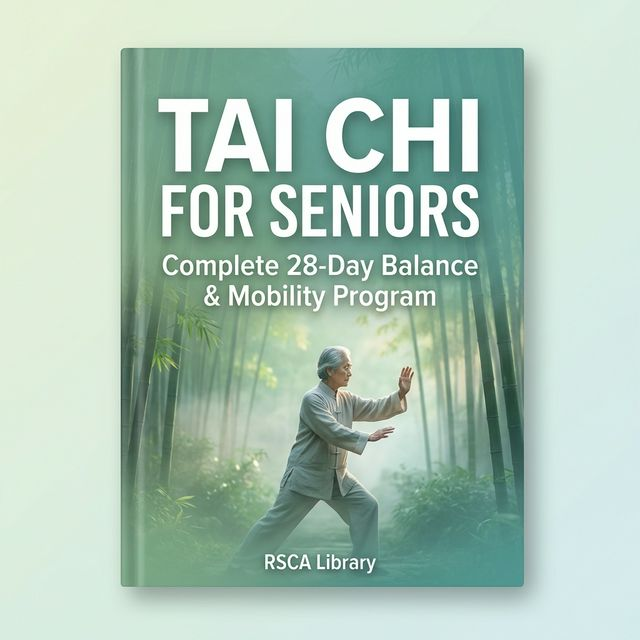

Table of Contents
- 1 Introduction — Why Tai Chi for Seniors?
- 2 The Science Behind Tai Chi & Aging
- 3 Getting Started — Safety Guidelines
- 4 Essential Breathing Techniques
- 5 The 10-Minute Daily Routine
- 6 Week 1 — Building Your Foundation
- 7 Week 2 — Improving Balance & Stability
- 8 Week 3 — Deepening Your Practice
- 9 Week 4 — Flow & Confidence
- 10 Relaxation & Stress Relief Techniques
- 11 Maintaining Your Practice Long-Term
Chapter 1: Introduction — Why Tai Chi for Seniors?
As we age, one of the most common fears is the gradual loss of mobility, independence, and physical confidence.
Falls become a major concern, joints begin to ache, and the simple daily activities that once felt effortless
start to require more effort. Many seniors find themselves caught in a frustrating cycle: the less they move,
the weaker they get, and the weaker they get, the less they want to move.
Tai Chi offers a way out of this cycle. Developed centuries ago in China, this ancient martial art has evolved
into one of the most researched and recommended forms of exercise for older adults. Unlike high-impact workouts,
running, or even brisk walking, Tai Chi is gentle on the joints, easy to adapt to any fitness level, and
requires no special equipment whatsoever.
This book is your complete guide to getting started with Tai Chi as a senior. Whether you're 55 or 95, whether
you exercise regularly or haven't moved intentionally in years, the program in these pages was designed
specifically for you.

Morning Tai Chi practice in Sangongyuan Park, Hangzhou — a scene repeated in parks across the
world every day. | Photo: Hermann Luyken, CC0
What makes this book different: Unlike generic Tai Chi guides, every movement, routine, and
exercise in this program was selected and sequenced specifically for seniors. We prioritize safety, clarity, and
gradual progression — so you can improve at your own pace without risk.
What You'll Gain from This Program
- Better Balance: Reduce your risk of falls with exercises that strengthen your stabilizing
muscles and improve proprioception.
- Increased Flexibility: Gently extend your range of motion without forcing your body into
painful stretches.
- Stronger Core: Build the deep abdominal and back muscles that support good posture and ease
of movement.
- Reduced Pain: Many practitioners report significant relief from chronic joint pain,
arthritis, and stiffness.
- Mental Clarity: Tai Chi's meditative quality helps reduce stress, improve focus, and
promote emotional well-being.
- Greater Independence: Feel confident getting up from a chair, climbing stairs, and moving
through your daily life.
Chapter 2: The Science Behind Tai Chi & Aging
You might wonder: can something as gentle and slow as Tai Chi really make a measurable difference? The answer
from modern science is a resounding yes.
Research-Backed Benefits
Over the past two decades, hundreds of clinical studies have examined the effects of Tai Chi on older adults. The
results are consistently positive:
- Falls Prevention: A 2019 study published in JAMA Internal Medicine found that Tai Chi
reduced the rate of falls among older adults by 58% compared to conventional stretching exercises. This was
one of the largest studies of its kind, involving over 670 participants.
- Balance Improvement: Research from the Oregon Research Institute demonstrated that adults
over 65 who practiced Tai Chi for just 12 weeks showed significant improvements in dynamic balance and
postural stability.
- Pain Reduction: The Arthritis Foundation recommends Tai Chi as a safe, effective way to
manage arthritis pain. Studies show it reduces inflammation markers and improves joint function.
- Cognitive Function: A systematic review in the Journal of Alzheimer's Disease found that
regular Tai Chi practice was associated with improved cognitive function and reduced risk of cognitive
decline in adults over 60.
- Heart Health: The American Heart Association has recognized Tai Chi as a moderate-intensity
exercise that can help lower blood pressure and improve cardiovascular health in older adults.

A 2nd century BCE Chinese Daoyin exercise chart — the earliest ancestor of Tai Chi.
Modern science is only now confirming what ancient practitioners already knew. | Wellcome Collection, CC BY 4.0
Key Finding: The National Institute on Aging now recommends Tai Chi as one of the most
effective exercises for improving balance and reducing fall risk in older adults. It is also one of the only
exercises shown to simultaneously improve physical and cognitive function.
Why Tai Chi Works So Well for Seniors
What makes Tai Chi particularly effective for older adults is the unique way it challenges the body. Unlike
conventional exercise that focuses on isolated muscle groups, Tai Chi engages the entire body in coordinated,
flowing movements. This trains the neuromuscular connections that are essential for balance and coordination —
the very systems that tend to decline with age.
Additionally, Tai Chi's emphasis on deep breathing and mental focus activates the parasympathetic nervous system,
which helps reduce stress hormones, lower blood pressure, and improve sleep quality. This mind-body integration
is what sets Tai Chi apart from other forms of exercise.
Chapter 3: Getting Started — Safety Guidelines
Before you begin any exercise program, it's important to set yourself up for success and safety. This chapter
covers everything you need to know before your first session.
Consult Your Doctor
If you have any chronic health conditions, recent injuries, or mobility limitations, please speak with your
healthcare provider before starting this program. While Tai Chi is one of the safest forms of exercise, it's
always wise to get clearance from your doctor — especially if you have significant balance issues, uncontrolled
blood pressure, or recent surgical procedures.
⚠️ Safety First: If you feel dizzy, experience sharp pain, or become short of breath during any
exercise, stop immediately and rest. Tai Chi should always feel comfortable and controlled.
Setting Up Your Practice Space
- Clear Area: You need about 6 feet x 6 feet (2m x 2m) of open space. Remove any tripping
hazards such as rugs, loose cords, or small furniture.
- Flat Surface: Practice on a flat, non-slippery surface. Avoid thick carpet or uneven ground
when starting out.
- Support Nearby: Keep a sturdy chair or wall within arm's reach for the first few weeks.
This gives you something to hold onto if you feel unsteady.
- Good Lighting: Ensure your space is well-lit so you can see clearly and move confidently.
- Comfortable Clothing: Wear loose, comfortable clothing that doesn't restrict movement. Flat
shoes with thin, flexible soles are ideal — or practice barefoot on a clean surface.
Time & Frequency
For the 28-day program in this book, aim to practice once per day. Each session is designed to last between 10
and 20 minutes, depending on the week. The best time to practice is in the morning, as it helps set a calm,
focused tone for the rest of your day — but any time that works for your schedule is perfectly fine.
Chapter 4: Essential Breathing Techniques
Breathing is the foundation of all Tai Chi practice. Before you learn a single movement, it's essential to master
the way of breathing that will accompany every exercise in this program.
Why Breathing Matters
Most people breathe shallowly, using only the upper part of their lungs. This type of breathing keeps the body in
a subtle state of stress. Tai Chi breathing — sometimes called "abdominal breathing" or "diaphragmatic
breathing" — expands the lower lungs, activates the diaphragm, and triggers your body's natural relaxation
response.
Exercise: Basic Abdominal Breathing
- Sit or stand comfortably. Place one hand on your chest and the other on your belly, just below the
navel.
- Breathe in slowly through your nose for 4 counts. Feel your belly push outward against your hand. Your
chest should barely move.
- Pause for 1-2 counts at the top of the breath.
- Exhale slowly through your mouth for 6 counts. Feel your belly draw inward naturally.
- Repeat for 5-10 breath cycles.
Breathing During Movement
Throughout this program, you'll follow a simple rule: inhale as you open or expand, exhale as you close
or contract. For example, when raising your arms upward, you inhale; when lowering them, you
exhale. This coordination of breath and movement is what gives Tai Chi its distinctive meditative quality.
Tip: Don't worry about getting the breathing perfectly synchronized with every movement at
first. Focus on maintaining slow, relaxed breathing. The coordination will come naturally with practice.
Chapter 5: The 10-Minute Daily Routine
This is the core routine you'll return to again and again throughout the program and beyond. Once you've
completed the 28-day plan, this 10-minute routine can become your daily maintenance practice — the minimum
effective dose for maintaining balance, flexibility, and calm.
The Routine
Movement 1: Opening the Door (2 minutes)
- Stand with feet shoulder-width apart, knees slightly bent, arms relaxed at your sides.
- Inhale as you slowly raise both arms forward to shoulder height, palms facing down.
- Exhale as you gently lower your arms back down, bending your knees slightly deeper.
- Repeat 8-10 times in a slow, flowing rhythm.
Movement 2: Parting the Wild Horse's Mane (2 minutes)
- From the basic stance, shift your weight to your right leg.
- Step forward with your left foot, right arm sweeping down and left arm rising up, as if stroking a
horse's mane.
- Shift your weight to your left leg and repeat on the other side.
- Alternate sides for 8 repetitions total (4 each side).
Movement 3: Cloud Hands (2 minutes)
- Stand with feet wide, knees slightly bent.
- Raise your right hand to face level, palm facing you, while your left hand drops to waist level.
- Slowly shift your weight left while sweeping your hands — right hand descends as left hand rises.
- Step together and repeat the pattern, moving slowly to the left for 4 steps, then back to the right.

Cloud Hands (Yún Shǒu) performed outdoors — one of the most effective movements for
developing lateral balance and coordination. | Manuel Schröder, CC BY-SA 4.0
Movement 4: Golden Rooster Stands on One Leg (2 minutes)
- Stand near your support chair. Shift your weight to your right leg.
- Slowly raise your left knee to a comfortable height (even a few inches is fine).
- Simultaneously raise your left hand, palm up, to shoulder height.
- Hold for 3-5 seconds. Lower slowly and repeat on the other side.
- Alternate for 6-8 repetitions total.
Movement 5: Closing Form (2 minutes)
- Return to the starting stance, feet shoulder-width apart.
- Inhale as you raise both arms slowly to the sides, palms facing up, until they meet above your head.
- Turn your palms to face downward and exhale slowly as you lower them in front of your body, down to your
waist.
- Repeat 5 times, making each repetition slower than the last.
- On the final repetition, bring your hands to rest on your lower belly. Close your eyes. Take 3 deep
breaths.
Chapter 6: Week 1 — Building Your Foundation (Days 1–7)
Welcome to your first week. This week is entirely about building the foundation: learning to stand correctly,
breathe deeply, and feel your body's relationship to the ground. There is no rush. Every Tai Chi master started
exactly where you are now — at Day 1.
Week 1 at a Glance: 10–12 minutes per session • Focus: posture, breathing, weight shifts
• Sessions: 7 days (no rest days this week — sessions are gentle enough to practice daily)
1Stance
2Breathe
3Shift
4Shift+
5Arms
6Link
7Full W1
Day 1 — The Basic Stance (10 min)
Your sole task today is to learn the Wuji (Empty) stance — the starting point of all Tai Chi.
Warm-up (2 min): March lightly in place, roll your shoulders back 5 times, gently roll your
head side to side.
Standing Meditation (8 min): Feet shoulder-width apart, toes slightly out, knees gently bent.
Tailbone tucked. Shoulders relaxed. Imagine a golden thread lifting the crown of your head. Eyes soft.
Breathe naturally. Simply stand and feel your weight through your feet.
Day 1 Goal: Stand comfortably for 8 minutes without holding tension in your
shoulders or jaw.
Day 2 — Abdominal Breathing (10 min)
Today you master the breathing technique that will accompany every movement in this program.
Standing Meditation (3 min): Begin in Wuji stance as learned on Day 1.
Abdominal Breathing Practice (7 min): Place one hand on your chest, one on your belly.
Inhale through your nose for 4 counts — your belly should rise while your chest stays still.
Pause 1 count. Exhale through your mouth for 6 counts — belly draws in naturally.
Repeat for 15–20 breath cycles. Then practice without counting, simply breathing deeply and slowly.
Day 2 Goal: Feel your belly rise on every inhale without your chest moving
significantly.
Day 3 — Side-to-Side Weight Shifts (12 min)
Stance + Breathing warm-up (3 min): Wuji stance with 10 abdominal breaths.
Side-to-Side Weight Shifts (9 min): In Wuji stance, slowly shift your weight onto your right
leg
— keep both feet flat, just let your right knee bend slightly more. Pause 2 seconds, feel the right foot connect
with the ground. Shift back through center to the left. Repeat 10 times each side.
Then try forward-and-back: step your left foot forward, shift weight front-to-back 8 times. Switch legs.
Day 3 Goal: Shift weight smoothly without swaying your upper body.
Day 4 — Deepening Weight Shifts (12 min)
Warm-up (3 min): Stance + 5 deep breaths + side-to-side shifts (5 each side).
Slow-Motion Weight Shifts (9 min): Repeat Day 3's exercise but move at half the speed.
Each shift should take 6–8 seconds. Breathe — inhale as you shift right, exhale as you shift left.
Add a gentle arm swing: as weight goes right, let your left arm drift forward naturally. Alternate for 12 reps.
Day 4 Goal: Coordinate your breathing with every weight shift.
Day 5 — Opening the Door (12 min)
Today you combine your stance, breathing, and weight shifts with your first arm movement.
Warm-up (3 min): Stance, breathing, and gentle weight shifts.
Opening the Door — 10 repetitions (9 min): From Wuji, inhale as you slowly raise both arms
forward to shoulder height, palms down — move as if lifting through water.
Exhale as you lower your arms and sink gently into your knees.
Each cycle should take 8–10 seconds. Focus on the breath leading the movement.
Day 5 Goal: Complete 10 smooth repetitions of Opening the Door with
coordinated breathing.
Day 6 — Introducing Parting the Wild Horse's Mane (14 min)
Warm-up (4 min): Stance, breathing, shifts, and 5 reps of Opening the Door.
Parting the Wild Horse's Mane — 8 reps (10 min): Shift weight to your right leg. Step forward
with your left foot. As you step, sweep your right arm down and bring your left arm up (as if stroking a horse's
mane from neck to back). Shift weight forward to left leg. Hold 2 seconds. Step back, switch sides.
Take it very slowly — each step should take 5–6 seconds. Use the chair for support if needed.
Day 6 Goal: Complete 8 reps of Parting the Wild Horse's Mane (4 each side)
without losing balance.
Day 7 — Full Week 1 Review (15 min)
Today you put it all together in your first complete flow session.
Your Day 7 Sequence: Wuji stance (2 min) → Abdominal breathing (2 min) →
Weight shifts side-to-side (2 min) → Opening the Door × 8 (4 min) →
Parting the Wild Horse's Mane × 6 (4 min) → Close: hands to belly, 5 deep breaths (1 min).
Week 1 Milestone: If you can stand for 8 minutes, shift weight without wobbling, and complete
Opening the Door with coordinated breath — you have built your foundation. Excellent work.
Practice each movement 8-10 times, focusing on slow, controlled motion. Remember: in Tai Chi, slower is better.
Each session should last about 12-15 minutes.
Week 1 Goal: Feel comfortable in the basic stance for 5 minutes. Be able to shift your weight
side-to-side and front-to-back without losing balance. Complete "Opening the Door" with coordinated breathing.
Chapter 7: Week 2 — Improving Balance & Stability (Days 8–14)
Welcome to Week 2. Your stance is more rooted, your breathing deeper. Now we introduce two landmark movements
and begin linking everything into a continuous flow.
Week 2 at a Glance: 12–15 min per session • Focus: lateral balance, single-leg
stability • 6 practice + 1 rest
8Cloud
9Cloud+
10Rooster
11Rest
12Link
13Flow
14Full W2
Day 8 — Introducing Cloud Hands (12 min)
Warm-up (3 min): Wuji stance + 5 Opening the Door reps.
Cloud Hands — 3 sets (9 min): Feet wide, knees soft. Right hand rises
to face level, left drops to waist. Shift weight left while hands swap positions. Step together, repeat. Move 4
steps left, 4 right = 1 set.
Day 8 Goal: Complete 3 sets without losing hand-to-weight-shift coordination.
Day 9 — Cloud Hands with Breathing (12 min)
Cloud Hands + breath (12 min): Same as Day 8 — now add conscious
breathing: inhale as upper hand rises, exhale as it descends. Each hand sweep 4–5 seconds. 4 sets total.
Day 9 Goal: Breathe with every Cloud Hands transition. Feel rhythm become
meditative.
Day 10 — Golden Rooster Stands on One Leg (13 min)
Warm-up (3 min): Cloud Hands × 2 sets.
Modified Golden Rooster (10 min): Chair nearby. Shift weight to right leg.
Lift left foot 2–3 inches. Raise left hand to shoulder height, palm up. Hold 5 sec. Lower. Switch. Repeat
5 per side. Progress: fingertip → 1 finger → no chair.
Day 10 Goal: Hold 5 seconds per side with only 1 finger on chair.
Day 11 — Rest Day
Your body consolidates movement patterns during rest. Take a gentle 15-minute walk if desired — no formal
practice today. Hydrate well and sleep 7–8 hours.
Day 12 — Linking the Sequence (15 min)
Full linked sequence: Opening the Door ×5 (3 min) → Parting Wild
Horse's Mane ×6 (3 min) → Cloud Hands ×2 sets (4 min) → Golden Rooster ×3 per side
(3 min) → Closing Form ×3 (2 min). Only 1-breath pause between elements.
Day 12 Goal: Complete the full sequence with no more than 3 stops.
Day 13 — Flow Practice (15 min)
Repeat the Day 12 sequence twice. First pass: slow and deliberate. Second
pass: more fluid, feel movements connect. Rest 2 min between passes.
Day 13 Goal: Second pass noticeably smoother than the first.
Day 14 — Full Week 2 Review (15 min)
Complete 10-Minute Routine from Chapter 5 as one continuous sequence with no
pauses. Then sit quietly for 3 minutes and notice how your body feels compared to Day 7.
Week 2 Milestone: You can flow through the full 10-minute routine and hold
Golden Rooster 8 sec per side with minimal chair support.
Chapter 8: Week 3 — Deepening Your Practice (Days 15–21)
By Week 3 you should notice real changes: better balance when walking, greater ease getting up from a chair,
and a quieter mind. This week adds two new movements and extends sessions to 15–18 minutes.
Week 3 at a Glance: 15–18 min per session • Focus: new techniques, extended
practice, free-style flow • 6 practice + 1 rest
15Brush
16Brush+
17Wave
18Wave+
19Rest
20Extend
21Full W3
Day 15 — Brush Knee & Push (15 min)
Warm-up (4 min): Full 10-min routine at relaxed pace — stop after Cloud
Hands (skip Rooster today).
Brush Knee & Push — 8 reps (11 min): Step forward left foot. Left
hand sweeps down across left knee; right palm pushes forward at chest height. Shift weight back. Switch. Each
rep: 6–8 sec. Keep the push and brush simultaneous — both hands move as one action.
Day 15 Goal: Complete 8 reps with push and brush synchronized.
Day 16 — Brush Knee with Flow (15 min)
Mini-routine (5 min): Opening the Door ×5 → Parting Wild Horse's
Mane ×4.
Brush Knee & Push into sequence (10 min): Now practice flowing directly
from Parting Wild Horse's Mane into Brush Knee & Push. Parting finishes, weight forward → pause 1
breath → Brush Knee steps begin. Repeat the Parting → Brush Knee transition 6 times each side.
Day 16 Goal: Transition from Parting to Brush Knee without a full stop.
Day 17 — Wave Hands Like Clouds — Extended (15 min)
Warm-up (4 min): Stance, breathing, Opening the Door ×5.
Extended Cloud Hands with steps (11 min): Cloud Hands as before — but
now add stepping: as hands circle, step left (touch, then step), bringing feet together each time. Move
6–8 steps in one direction, then reverse. Repeat 3 sets. This builds coordination and spatial awareness.
Day 17 Goal: Move 6 steps left and right without losing hand rhythm.
Day 18 — Long Extended Cloud Hands (15 min)
Extended Cloud Hands (15 min, no warm-up break): Start immediately with full
Cloud Hands with steps. 4 sets — each set slightly faster tempo than the last. On the 4th set, slow back
down to your slowest pace. Focus on your breath throughout.
Day 18 Goal: Sustain 15 minutes of Cloud Hands with steps without stopping.
Day 19 — Rest Day
A rest day after two demanding technique days. Go for a gentle walk, do some gentle stretching, or practice your
abdominal breathing while seated. No formal practice — your nervous system is consolidating new patterns.
Day 20 — Extended Full Sequence (18 min)
Extended Sequence: Opening the Door ×5 (3 min) → Parting Wild
Horse's Mane ×6 (3 min) → Extended Cloud Hands ×2 sets (4 min) → Brush Knee & Push
×6 (3 min) → Golden Rooster ×4 per side (3 min) → Closing Form ×5 (2 min). Flow
between each element with only breath as a pause.
Day 20 Goal: Complete the 18-min sequence with no more than 2 full stops.
Day 21 — Full Week 3 Review (18 min)
Repeat the Day 20 sequence. Aim to hold Golden Rooster briefly without any
chair support. After the sequence, stand in Wuji for 3 minutes with eyes closed — feel the energy
settling.
Week 3 Milestone: 18-minute continuous practice. Golden Rooster without chair
(even for 3 seconds). Brush Knee flows naturally from Parting Wild Horse's Mane.
Chapter 9: Week 4 — Flow & Confidence (Days 22–28)
You have made it to the final week. Your body has adapted significantly — muscles stronger, balance
sharper,
movements more fluid. This week is about refinement, confidence, and planting the seeds of a lifelong practice.

Tai Chi connects generations — a practice you carry forward for the rest of your life.
| Photo: Peter Harrison, CC BY 2.0
Week 4 at a Glance: 18–20 min per session • Focus: refinement, confidence,
personalization • 6 practice + 1 completion day
22Monkey
23Monkey+
24Full
25Full+
26Outdoors
27Teach
28Graduate
Day 22 — Repulse the Monkey (16 min)
Warm-up (4 min): Extended Cloud Hands ×2 sets.
Repulse the Monkey — 8 reps (12 min): Extend right arm forward, palm
out. Step backward with right foot as right hand draws to hip and left pushes forward. Step back with left,
reverse arms. Continue stepping backward, alternating, for 6–8 steps. Check behind you first! Focus on a
straight spine and level shoulders throughout each backward step.
Day 22 Goal: Complete 8 backward steps with spine vertical and movements
smooth.
Day 23 — Repulse the Monkey in Sequence (16 min)
Full sequence + Repulse (16 min): Run through the Day 20 sequence (Opening
the Door → … → Golden Rooster). At the end, add: Repulse the Monkey ×6 steps → Wuji
stance → Closing Form. The full sequence should now include 7 movements flowing end-to-end.
Day 23 Goal: Complete the 7-movement full sequence in one continuous flow.
Day 24 — Your Complete 20-Minute Routine (20 min)
20-Minute Full Practice: Opening the Door ×6 (3 min) → Parting
Wild Horse's Mane ×8 (3 min) → Extended Cloud Hands ×3 sets (5 min) → Brush Knee &
Push ×6 (3 min) → Golden Rooster ×4 per side (3 min) → Repulse the Monkey ×8 steps
(2 min) → Closing Form ×5 (1 min). No pauses — only breath.
Day 24 Goal: Complete 20 minutes continuously. Feel each movement blend into
the next.
Day 25 — 20-Minute Flow, Repeated (20 min)
Repeat Day 24's full 20-minute routine. Today, do it twice through with a
5-minute seated rest between rounds. In the seated rest, close your eyes and notice your heartbeat, breathing,
and the tingling sensation in your hands and feet.
Day 25 Goal: Second round smoother and more fluid than the first.
Day 26 — Take It Outside
Outdoor Practice (20 min): If weather permits, take your full routine to a
garden, park, or patio. Feel the ground under your feet. Hear the sounds around you. Let them become part of
your meditation rather than distractions. Natural settings amplify the meditative quality of Tai Chi
dramatically.
Variation: Try performing Cloud Hands with eyes closed for 1 complete set
(near a wall for safety). This develops proprioception — your body's internal sense of position.
Day 26 Goal: Practice outdoors. Notice how nature enhances the experience.
Day 27 — Teach Someone
Teaching practice (20 min): Invite a family member, friend, or neighbor to
join you. Teach them the Wuji stance, abdominal breathing, and Opening the Door. You will immediately discover
how deeply you have internalized these skills — teaching reveals what you truly know. Then do your full
routine while they watch or follow along.
Day 27 Goal: Successfully teach someone the basic stance and Opening the Door.
Day 28 — Graduation Day (20 min)
This is your final day of the 28-day program. Today is a celebration.
Your Graduation Routine (20 min): Perform your complete routine one time,
slowly and deliberately. No goals, no targets — just move. Let each breath guide each movement. At the
end, stand in Wuji for 5 minutes. Reflect on how you felt on Day 1 versus today.
You Did It. You have completed 28 days of Tai Chi for Seniors. You are healthier, more
balanced, and more centered than when you started. This is not the end — it is the beginning of a lifelong
practice. Continue with the 10-Minute Daily Routine from Chapter 5, at least 5 days per week. The benefits
compound over months and years.
Chapter 10: Relaxation & Stress Relief Techniques
Beyond the physical movements, Tai Chi offers powerful tools for mental and emotional well-being. This chapter
introduces additional relaxation techniques you can use alongside your daily practice.
Body Scan Meditation
5-Minute Body Scan
- Sit or lie down comfortably. Close your eyes.
- Begin at the top of your head. Notice any tension, and consciously release it with each exhale.
- Slowly move your attention down through your face, neck, shoulders, arms, hands, chest, belly, hips,
legs, and feet.
- At each area, breathe into it and let go of any tightness or holding.
- When you reach your feet, take 3 deep breaths and slowly open your eyes.
Standing Meditation for Stress Relief
Return to the standing meditation from Week 1, but now hold it for 8-10 minutes. As you stand, visualize roots
growing from your feet into the earth, anchoring you firmly. With each exhale, imagine stress and tension
flowing down through your body and out through these roots. This visualization technique has been used in Tai
Chi for centuries and is remarkably effective for calming anxiety.
Gentle Self-Massage
After your Tai Chi session, spend 2-3 minutes gently massaging these key areas:
- Temples: Small circular motions with your fingertips for 30 seconds.
- Ears: Gently pull and massage your earlobes and the outer edges of your ears.
- Knees: Place your palms over your knee caps and make slow circles, warming the joint.
- Lower Back: Make fists and gently tap your lower back on both sides of the spine.
Chapter 11: Maintaining Your Practice Long-Term
You've completed the 28-day program — congratulations! But this is really just the beginning. The true benefits
of Tai Chi compound over months and years of consistent practice. Here's how to keep your momentum going.
Your Ongoing Schedule
- Minimum: Practice the 10-Minute Daily Routine from Chapter 5 at least 5 days per week.
- Ideal: Practice the full 20-minute routine daily, adding the relaxation techniques from
Chapter 10.
- Social: Consider joining a local Tai Chi class or online community. Practicing with others
adds accountability and joy.
Tracking Your Progress
Keep a simple journal to track your practice. Note:
- How many minutes you practiced
- Which movements felt smooth and which felt challenging
- How you felt before and after the session (energy level, mood, pain levels)
- Any improvements you notice in daily life (better balance, easier stairs, calmer mind)
Continue Learning
This program gave you a solid foundation. To continue growing:
- Check out the bonus books included with this bundle: Tai Chi for Weight Loss and
Tai Chi for Beginners
- Look into the traditional Tai Chi long form (108 movements) when you feel ready for a deeper challenge
- Explore Qigong, a related Chinese practice that focuses even more on energy cultivation and healing
Remember: The most important session is the next one. Don't worry about perfection — simply
show up, breathe, and move. Your body and mind will thank you.
Image Credits & Attributions
The following photographs are used in this eBook under their respective
open licenses. All photos are from Wikimedia Commons.
- Morning Tai Chi in Sangongyuan Park, Hangzhou — Photo by Hermann Luyken. License: CC0 1.0 Universal (Public
Domain).
- Daoyin Exercise Chart (2nd century BCE) — Wellcome Collection, London. License: CC BY 4.0.
- Cloud Hands / Taiji Wolkenhände — Photo by Manuel Schröder (Taijiqigong). License: CC BY-SA 4.0.
- Tai Chi — Young and Old — Photo by Peter Harrison, Auckland, New Zealand. Sourced from
Flickr via Wikimedia Commons. License: CC BY 2.0.
© 2026 RSCA Library. All rights reserved.
This publication is for informational purposes only. Consult a healthcare professional before starting any new
exercise program.